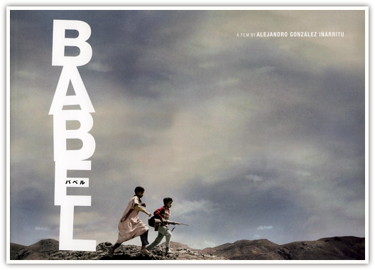

1. 这个故事告诉我们，人类的痛苦来源于沟通困难。
2. 为了说明这个道理，导演选取了几个沟通困难导致痛苦的例子。
2.5 其中一个例子的痛苦的女主角根本就是哑巴。
3. 导演把这几个例子错落的拼在一起，构成了一部长度接近三小时的电影。
3.5 就像把几根萝卜几块洋葱几片蔬菜放在一个盘子里，说，这是蔬菜沙拉。
4. 为了说明这是沙拉而不是蔬菜们，导演在几个故事之间找出了微妙的联系。
4.5 可是这些联系是如此的牵强，以至于反而更说明这只是蔬菜们，不是蔬菜沙拉。
5. 片子后半部分有几分钟的镜头特别华丽。
5.5 剩下的不太华丽，或者说看不出和华丽镜头有什么共同点。
6. 片子里出现了裸体女郎，所以被定为R级。
7. 导演最后用文字告诉我们，孩子是生活的希望。但是并没有给出理由。

August 18th, 2007 12:34
有些东西不需要缜密的逻辑~感觉到了，一点点想象力的添加就是完美的。
August 27th, 2007 11:54
你的思维方式还真特别
September 7th, 2007 08:00
嘿,写的不很错,虽然我没看过电影,第一句话就很吸引人.
April 12th, 2010 15:41
1、我觉得这个故事告诉我们，这个世界时多么的不平等。
2、为了说明这个道理，导演选择了不同阶层国家中的相对相等阶层的人物来演绎故事。
2.5、我觉得让日本的主人公成为哑巴，是为了说明日本这个国家是多么的封闭和独特。
3、导演通过某种也许是牵强，但作为一个虚构的故事来说又无可厚非的线索把几个故事联系到一起，是为了把故事放在全球化的语境之下，从而更加凸显世界的不平等。
4、几分钟的华丽镜头，可能是导演拍着拍着就HIGH过头了，个人认为不太华丽的比较好看。
5、跟你一样，这个故事除了激起我一定要革美国人的命的决心之外，没让我看到未来与孩子有啥关系。